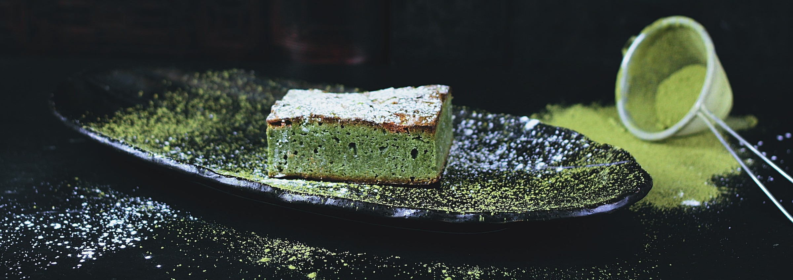

<html lang="en">
<head>
    <meta charset="UTF-8">
    <meta name="viewport" content="width=device-width, initial-scale=1.0">
    <script src="main.js" defer></script>
    <title>Odin Restaurant Page</title>
</head>
<body>
<div id="content">
    <!-- <div class="header">
        
        <div class="links">
            <div class="link">Home</div>
            <div class="link">Bookings</div>
            <div class="link">Events</div>
            <div class="link">Contact Us</div>
        </div>
    </div> -->
    <!-- <div class="banner">
        
    </div>
    <div class="main">
        <div class="desc-wrapper">
            <p class="desc">Matcha Mondays specializes in all the delights which matcha has to offer! We offer lattes, teas, pastries bursting with matcha moose, and delicious cakes of all different sizes which will keep you coming back for more!</p>
            <p class="desc">Matcha is a very finely grounded green tea. Unlike green tea leaves, much more of the plant is taken when making matcha, and the grinding process releases more caffine (although still much less than coffee) and antidoxidants. Studies have linked matcha to promoting healthy livers and hearts and even aid in weight-loss (although we should stress, no matter how much matcha a piece of cake has, it is still a piece of cake!</p>
        </div>
    </div> -->
</div>
</body>
</html>